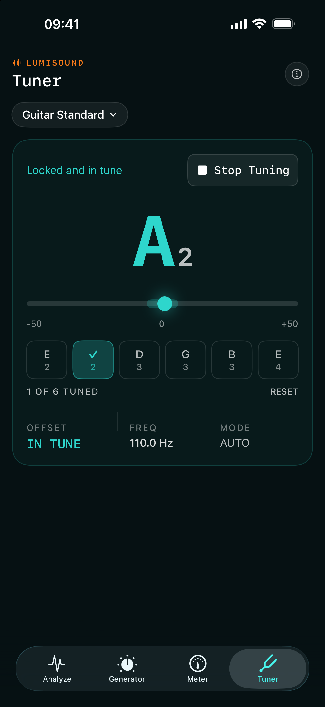
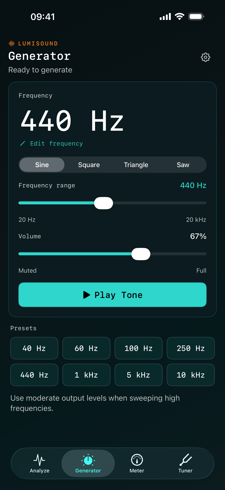
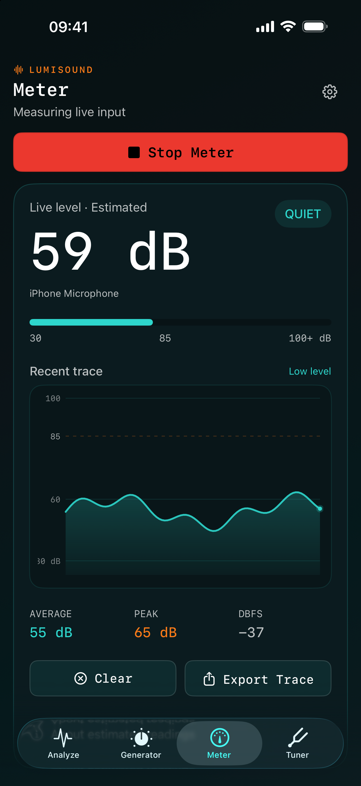

I wanted an audio toolkit I could keep on my phone, so I made Lumisound. It lets you look through recordings, tune an instrument, generate test tones and check sound levels.
Record something with your microphone or open an audio file. The spectrogram shows which frequencies are present and how they change over time.
Start with some audio.
Use a live recording, or import a WAV, AIFF, M4A or MP3 file from Files.
Look a bit closer.
Zoom into the graph and drag to read the frequency and level. If there’s a moment you want to come back to, add a marker and a note.
Listen again.
Tap the graph to jump to that point in the recording. You can also loop a short section to hear the same part again.
02 / Tuner
A tuner, when you need one.
Choose your instrument and play a string to see whether it’s sharp or flat. There’s a chromatic mode too, if you just want to check a note.
ChromaticGuitarDrop DBassUkulele
Switch on Musician Mode in Settings to add the Tuner to your tools.

03 / Generator
Generate a test tone.
Choose a frequency between 20 Hz and 20 kHz, set the volume and press play. Handy when you need a steady tone to work with.

Choose sine, square, triangle or saw. Type in a frequency or use one of the presets.
04 / Meter
Check the sound level.
Get a quick idea of how loud things are around you. The graph keeps a recent history, with average and peak readings underneath.

You can save the graph as a PNG or export its data as CSV. The readings are estimates; this isn’t a calibrated sound level meter.
Save & export
Pick it up again later.
Save a session with a name you’ll recognise. When you reopen it, your recording, markers and notes are still there. You can export the audio, a spectrogram image or the analysis data too.
Four themes change the app’s colours and the spectrogram itself.
Spectral
Amber Scope
Corrupted Pixel
Mono Pro
Microphones and recording boost
If a recording is quiet, you can add up to 24 dB of microphone boost in Settings. That raises background noise too, so a little may be enough. It only applies to new Analyze recordings, not imported files, the Meter or the Tuner. You can also see which microphone is active and choose another when iOS makes one available.
Using a wider screen
When there’s enough space, Analyze puts its controls beside the graph. On a smaller screen, they sit underneath it.
Where your recordings go
Your recordings and saved sessions stay on your device unless you export them. There’s no account to create, no tracking and no cloud service to sign into.